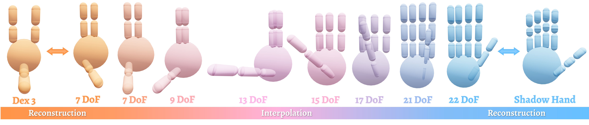

One Hand to Rule Them All: Canonical Representations for Unified Dexterous Manipulation
University of North Carolina at Chapel Hill
Robotics: Science and Systems XXII (RSS 2026)

Abstract
Dexterous manipulation policies today largely assume fixed hand designs, severely restricting their generalization to new embodiments with varied kinematic and structural layouts. To overcome this limitation, we introduce a parameterized canonical representation that unifies a broad spectrum of dexterous hand architectures. It comprises a unified parameter space and a canonical URDF format, offering three key advantages. 1) The parameter space captures essential morphological and kinematic variations for effective conditioning in learning algorithms. 2) A structured latent manifold can be learned over our space, where interpolations between embodiments yield smooth and physically meaningful morphology transitions. 3) The canonical URDF standardizes the action space while preserving dynamic and functional properties of the original URDFs, enabling efficient and reliable cross-embodiment policy learning.
We validate these advantages through extensive analysis and experiments, including grasp policy replay, VAE latent encoding, and cross-embodiment zero-shot transfer. Specifically, we train a VAE on the unified representation to obtain a compact, semantically rich latent embedding, and develop a grasping policy conditioned on the canonical representation that generalizes across dexterous hands. We demonstrate, through simulation and real-world tasks on unseen morphologies (e.g., 81.9% zero-shot success rate on 3-finger LEAP Hand), that our framework unifies both the representational and action spaces of structurally diverse hands, providing a scalable foundation for cross-hand learning toward universal dexterous manipulation.
URDF Comparison
Original URDF
Canonical URDF
Real-World
| Model | Success Rate | ||||||||||
|---|---|---|---|---|---|---|---|---|---|---|---|
| Apple | Band Aid | Coke | Cube | Football | Mayo | Orange | Pear | Sheep | Soccer | Average | |
| leap_3333 (trained) | 8/10 | 7/10 | 9/10 | 7/10 | 10/10 | 6/10 | 8/10 | 9/10 | 10/10 | 9/10 | 83/100 |
| leap_3033 (trained) | 8/10 | 8/10 | 2/10 | 6/10 | 9/10 | 6/10 | 7/10 | 9/10 | 10/10 | 10/10 | 75/100 |
| leap_3033 (zero-shot) | 8/10 | 10/10 | 5/10 | 5/10 | 7/10 | 2/10 | 9/10 | 7/10 | 9/10 | 9/10 | 71/100 |
| leap_3303 (trained) | 7/10 | 8/10 | 5/10 | 3/10 | 9/10 | 4/10 | 9/10 | 7/10 | 9/10 | 9/10 | 70/100 |
| leap_3303 (zero-shot) | 9/10 | 6/10 | 4/10 | 5/10 | 9/10 | 5/10 | 8/10 | 6/10 | 9/10 | 10/10 | 71/100 |
leap_3333
leap_3033
leap_3303
More Hand Variants
Simulation
1. Morphology Latent Space

2. URDF Fidelity
| Method | Success Rate (%) | ||
|---|---|---|---|
| Allegro | Barrett | ShadowHand | |
| Ours (Canonical) | 84.20 | 88.10 | 62.90 |
| Ours (Original) | 71.60 (-12.60) | 88.70 (+0.60) | 62.60 (-0.30) |
| $\mathcal{D(R,O)}$ (Original) | 92.30 | 87.30 | 83.00 |
| $\mathcal{D(R,O)}$ (Canonical) | 92.38 (+0.08) | 87.34 (+0.04) | 78.63 (-4.37) |
| Policy | Steps-to-Fall ↑ | Cumulative Rotation ↑ |
|---|---|---|
| Shadow (Original) | 369.66 | 9.09 |
| Shadow (Canonical) | 390.62 | 10.92 |
| LEAP (Original) | 397.62 | 5.63 |
| LEAP (Canonical) | 326.98 | 6.31 |
3. Dexterous Grasping
| Method | Success Rate (%) ↑ | Time (Sec.) ↓ | ||
|---|---|---|---|---|
| Allegro | Barrett | ShadowHand | ||
| DFC | 76.2 | 86.3 | 58.8 | >1800 |
| GenDexGrasp | 51.0 | 67.0 | 54.2 | 19.71 |
| $\mathcal{D(R,O)}$ Grasp | 92.3 | 87.3 | 83.0 | 0.65 |
| Ours | 84.2 | 88.1 | 62.9 | 0.13 |
| Model | Success Rate (%) | ||
|---|---|---|---|
| leap_3033 | leap_3303 | leap_3330 | |
| All data | 76.1 | 85.4 | 43.3 |
| No leap_3033 data | 67.8 | 83.4 | 31.5 |
| No leap_3303 data | 81.5 | 81.9 | 46.9 |
| No leap_3330 data | 74.7 | 81.6 | 36.3 |
BibTeX
@article{wei2026one,
title={One Hand to Rule Them All: Canonical Representations for Unified Dexterous Manipulation},
author={Wei, Zhenyu and Yao, Yunchao and Ding, Mingyu},
journal={arXiv preprint arXiv:2602.16712},
year={2026}
}